Módulo 3 . Aula 6
Acesso aberto na Fiocruz
Módulo 3 . Aula 6
Acesso aberto na Fiocruz
 Objetivos da
aula
Objetivos da
aula
Nesta aula apresentamos ações da Fiocruz para promover o Acesso Aberto. Ao final desta aula você será capaz:
- Relacionar a missão institucional da Fiocruz com o movimento pela abertura do conhecimento.
- Conhecer o histórico recente de ações da Fiocruz no campo do Acesso Aberto.
- Conhecer o repositório institucional Arca, seus principais objetivos, características e benefícios para diversos públicos.
- Conhecer as contribuições da Editora Fiocruz para o Acesso Aberto e sua participação na plataforma SciELO Livros.
- Familiarizar-se com as revistas científicas em Acesso Aberto editadas pela Fiocruz: seu escopo e objetivos.
- Conhecer o Portal de Periódicos da Fiocruz como agregador das revistas da fundação e espaço de divulgação de artigos científicos.
- Identificar a importância do Acesso Aberto em emergências sanitárias.
A Fiocruz e a informação como bem público
![Fotografia em ambiente externo, durante o dia. Em primeiro plano, à esquerda, há uma estátua do sanitarista Sergio Arouca, com um dos braços levantados, como se estivesse fazendo um gesto ou saudação. Ao fundo, destaca-se o Castelo Mourisco da Fiocruz, um pavilhão histórico de cor rosada, com vários andares, arcos nas janelas e elementos arquitetônicos ornamentados. No topo, há duas cúpulas esverdeadas, uma em cada extremidade. A construção está cercada por um jardim com gramado, palmeiras e outras árvores, sob um céu azul claro.](../media/modulo3/aula6-img1.jpg "Fonte: Banco de imagens da Fiocruz (2025).")
A Fundação Oswaldo Cruz, como instituição pública e estratégica em saúde, orienta suas práticas nos campos da informação e da comunicação científica pela premissa de que a informação é um bem público e um dos determinantes sociais em saúde. Em sua missão institucional, a ampla difusão do conhecimento está claramente expressa:
“Produzir, disseminar e compartilhar conhecimentos e tecnologias voltados para o fortalecimento e a consolidação do Sistema Único de Saúde (SUS) e que contribuam para a promoção da saúde e da qualidade de vida da população brasileira, para a redução das desigualdades sociais e para a dinâmica nacional de inovação, tendo a defesa do direito à saúde e da cidadania ampla como valores centrais”
(Aprovada no VI Congresso Interno)
Dessa forma, a promoção do Acesso Aberto está intimamente ligada à missão da Fiocruz, que se expressa em políticas, infraestruturas e investimentos institucionais.
Histórico do Acesso Aberto na Fiocruz
Como instituição centenária, a Fiocruz acumula muitas ações relacionadas ao Acesso Aberto. Algumas iniciativas mais recentes são:
1990
Criada para promover a gestão da informação, o intercâmbio de conhecimento e evidência científica em saúde em Acesso Aberto, em parceria com a Organização Pan-Americana da Saúde/Organização Mundial da Saúde, por meio do Centro Latino-Americano e do Caribe de Informação em Ciências da Saúde (OPAS/OMS/Bireme).
2004
Iniciativo pioneiro para garantir acesso a recursos educacionais abertos.
2007
Posteriormente, a iniciativa será ampliada e transformada no repositório institucional Arca.
2010
Objetivo estratégico de “priorizar a Política de Acesso Aberto na gestão da informação e do conhecimento produzido na instituição” é incluído no Plano Quadrienal.
2011
Sua função é “reunir, hospedar, disponibilizar e dar visibilidade à produção intelectual da Instituição, com o compromisso de proporcionar o livre acesso à informação em saúde”.
2012
A iniciativa visa maximizar visibilidade, acessibilidade, uso e impacto de pesquisas, ensaios e estudos publicados na forma de coleções on-line.
2012
Grupo estabelecido no âmbito da Câmara Técnica de Informação e Comunicação.
2014
São publicadas a Portaria da Política de Acesso Aberto ao Conhecimento e o Plano Operativo do Arca.
2015
A plataforma reúne os artigos científicos publicados pelas revistas mantidas pela fundação, todas em Acesso Aberto diamante. Ou seja, sem pagamento de taxas para leitura ou publicação.
2023
Aprimoramento da política reflete o novo contexto da comunicação científica, a crescente cobrança de taxas de publicação e a celebração de Acordos Transformativos com editoras comerciais.
2024
Evento debateu tendências e disputas ao redor desse movimento internacional, visando contribuir com a Estratégia Nacional Ciência, Tecnologia e Inovação (ENCTI) 2024-2030.
2024
Conselho Deliberativo da Fiocruz homologou versão atualizada em dezembro.
2025
Entra em vigor em fevereiro a versão atualizada da Política de Acesso Aberto ao Conhecimento.
Acesso Aberto na Fiocruz: depósito mandatório é ampliado
A versão atualizada da Política de Acesso ao Conhecimento (2024) expande os tipos de obras intelectuais com depósito mandatório no repositório institucional Arca e na plataforma Educare.
É obrigatório depositar:
- Trabalhos de Conclusão de Curso (TCC) e Trabalhos de Conclusão de Residência (TCR) elaborados em Programas de Pós-graduação da Fiocruz;
- Dissertações e teses elaboradas por alunos dos Programas de Pós-graduação da Fiocruz;
- Dissertações e teses defendidas por servidores da Fiocruz em Programas de Pós-graduação da Fiocruz ou externos relacionadas com a missão da instituição;
- Artigos científicos publicados em periódicos elaborados por autores da Fiocruz;
- Artigos científicos de autores da Fiocruz já aprovados pelo processo de revisão por pares para publicação em revista científica;
- Documentos de patente de invenção e modelo de utilidade, registro de desenho industrial e registro de marca após sua publicação pelo Instituto Nacional de Propriedade Industrial (INPI).
- Os recursos educacionais abertos elaborados por autores da Fiocruz, especialmente aqueles que são parte de cursos financiados por editais de fomento ou elaborados por meio de parcerias institucionais, financiados com recursos públicos.
Além das tipologias de caráter mandatório descritas acima, deve-se estimular o depósito em Acesso Aberto, sempre que possível, de toda e qualquer produção científica, técnica, tecnológica, cultural e didático-educacional da Fiocruz.
Repositório institucional Arca
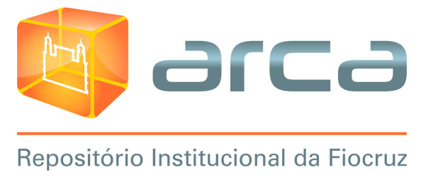
O repositório institucional Arca, coordenado pelo Instituto de Comunicação e Informação Científica e Tecnológica em Saúde (Icict), reúne a produção bibliográfica da Fiocruz e é um dos instrumentos de efetivação da Política de Acesso Aberto ao Conhecimento na Fiocruz.
- Mais de 30 comunidades (novembro /2024).
- Mais de 65.062 documentos (novembro/2024).
- Cada unidade Fiocruz gerencia sua própria comunidade, que reúne sua coleção de documentos.
- Requisito para a aprovação de financiamento nos editais Programa Institucional de Bolsas de Iniciação Científica (Pibic), Programa Institucional de Bolsas de Iniciação em Desenvolvimento Tecnológico e Inovação (Pibiti) e Inova da Fiocruz.
- É um indicador de Desempenho do Governo Federal.
- Desenvolvido com o software livre DSpace.
- Conta com plano de preservação digital de longo prazo.
Vantagens do Arca
O Arca possui muitas vantagens, tanto para os autores como para a Fiocruz e a sociedade. Confira essas vantagens a seguir.
pan_tool_alt Clique Toque nas imagens para visualizar as informações.
Editora Fiocruz
Criada em 1993, a Editora Fiocruz surge da necessidade de ampliar o acesso ao conhecimento científico nas áreas da saúde por meio da difusão de livros em saúde pública, ciências biológicas e biomédicas, pesquisa clínica, ciências sociais e humanas. Hoje, com mais de 30 anos de trajetória, a Editora contabiliza mais de 500 títulos entre obras de autores da Fiocruz e outras produções acadêmicas relevantes em âmbito nacional e internacional.
Uma importante contribuição da Editora é assegurar um espaço de difusão de conhecimento que respeite as especificidades e os modos próprios de expressão dos diversos campos da Saúde, respaldando livros como uma forma segura de difusão e avaliação acadêmica.
Destaque da Editora Fiocruz: “O que é o SUS.”
![Imagem composta por duas páginas lado a lado. À esquerda, a capa de um e-book com fundo em tom verde-azulado e o título “O que é o SUS” em destaque. Na lateral esquerda da capa, há uma faixa com vários ícones coloridos relacionados à saúde, como cruz médica, ambulância e profissionais. Abaixo do título, aparece o nome do autor Jaimilson Silva Paim e, na parte inferior, logotipos institucionais. À direita, há uma página informativa com o título “Como navegar neste e-book”. O conteúdo está organizado em quadros com ilustrações de mãos indicando gestos de toque, arraste e ampliação, acompanhadas de pequenos textos explicativos. Na parte inferior, há uma imagem de vídeo e outros elementos gráficos que representam recursos interativos do e-book.](../media/modulo3/aula6-img4.jpg "Fonte: Fiocruz (2025).")
[...] busca esclarecer o que é, o que não é, o que faz, o que deve fazer e o que pode fazer o SUS. Pela importância do tema e da obra, O Que é o SUS foi selecionado para se transformar no primeiro e-book interativo da Editora Fiocruz, no âmbito do primeiro edital da Faperj especialmente dedicado às editoras universitárias.
Participação da Fiocruz na fundação do SciELO Livros
![Imagem de uma página de site com fundo claro, relacionada à plataforma SciELO Books. No topo, há o nome da plataforma e um menu com opções de navegação. À esquerda, aparece uma coluna com filtros ou categorias, incluindo listas de países ou áreas. No centro, há um banner em destaque com a palavra “NEW COLLECTION!” em fundo vermelho, além de outros blocos com informações e números sobre o acervo. Abaixo, são exibidas capas de livros organizadas em grade. À direita, há ícones de redes sociais e logotipos institucionais. A página apresenta organização típica de um portal digital de publicações científicas.](../media/modulo3/aula6-img5.jpg "Fonte: Scielo Books")
Há muitos anos, a Editora Fiocruz vislumbrava que seria interessante operar com duas novas modalidades que pareciam promissoras: os livros publicados on-line e os livros em Acesso Aberto.
No entanto, apenas em 2012, um consórcio reunindo a Editora Fiocruz e as editoras da Universidade Estadual Paulista Júlio de Mesquita Filho (Unesp) e da Universidade Federal da Bahia (UFBA) desenvolveria o projeto piloto da plataforma SciELO Livros e iniciaria a coleção SciELO Livros Brasil.
O objetivo da plataforma é operar como uma infraestrutura nacional para a produção de livros em formato digital e on-line, atualizada com o estado da arte internacional. No projeto piloto, a meta era disponibilizar 500 títulos das três editoras universitárias em um modelo que mesclava acesso aberto e acesso controlado — este último com preços até 40% inferiores aos do exemplar impresso.
Em busca de equilíbrio: entre a sustentabilidade e o Acesso Aberto
A prioridade do SciELO Livros é maximizar a presença do catálogo em todos os principais índices nacionais e internacionais, com ou sem fins lucrativos, de modo que qualquer pesquisador ou usuário, em qualquer lugar do mundo, possa recuperar, acessar, fazer downloads de livros, seja em Acesso Aberto ou comercializado por meio de parcerias e contratos com outras instituições e empresas livreiras.
Vale, ainda, destacar que o SciELO Livros pode ser utilizado por outros países para publicar coleções nacionais com gestão autônoma. Alguns exemplos são a editora da Universidade de Rosário, da Colômbia, e a equatoriana Abya-Yala com títulos dedicados aos povos indígenas e afro-americanos. Atualmente (dez/2024), o SciELO Livros reúne mais de 22 editoras nacionais e internacionais, 2.050 títulos, sendo 1.327 (64%) em Acesso Aberto.
De 2012 até o 2024, podemos destacar:
![Imagem em formato de infográfico com fundo claro, dividida em duas colunas comparativas. À esquerda, com o título “O Portal SciELO Livros registra”, aparecem ícones coloridos acompanhados de dados: mais de 2.050 títulos disponíveis, mais de 1.327 títulos em acesso aberto, reunião de mais de 17.811 títulos de 17.415 autores e mais de 125 milhões de downloads. À direita, sob o título “Sendo da Editora Fiocruz”, com o logotipo da instituição, há números correspondentes: 413 títulos disponíveis, 236 em acesso aberto, 3.639 capítulos e 3.421 autores, além de mais de 54 milhões de downloads. Os dados são apresentados com ícones ilustrativos, como livros, cadeado e símbolo de download, facilitando a leitura visual das informações.](../media/modulo3/aula6-img6.jpg "Fonte: Campus Virtual Fiocruz")
As revistas científicas da Fiocruz em Acesso Aberto
A Fiocruz também promove o Acesso Aberto à literatura científica por meio das revistas científicas editadas por diversas unidades. Atualmente, são nove revistas que adotam a modalidade de Acesso Aberto diamante, por meio do qual leitores não pagam assinaturas para ler a íntegra dos artigos nem autores pagam taxas para publicar seus trabalhos.
pan_tool_alt CliqueToque nas imagens para ver mais informações
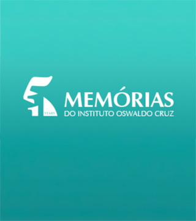
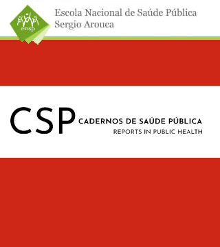
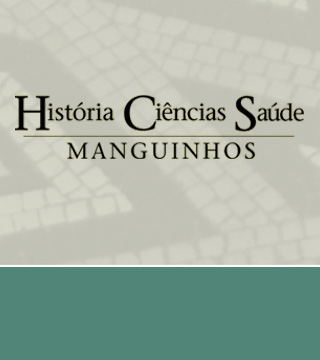
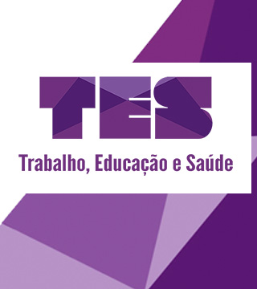
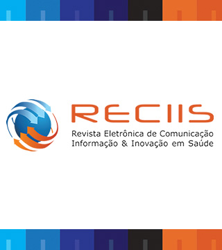
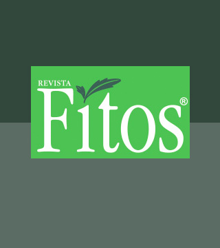
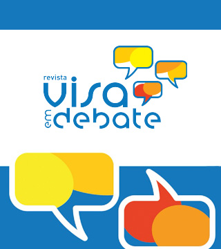
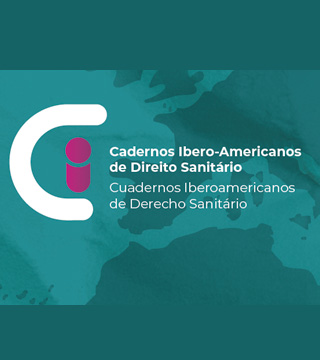
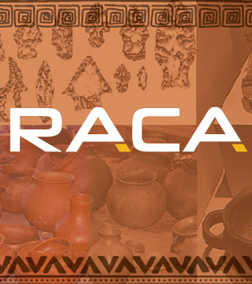
Memórias do Instituto Oswaldo Cruz
Primeira revista criada pela instituição (1909), inaugurou a tradição de publicações acadêmicas na Fiocruz.
Como revista multidisciplinar, publica pesquisas originais nos campos da medicina tropical e parasitologia humana com abordagens de bioquímica, imunologia, biologia celular, molecular e genética.
Desempenhou um importante papel na disseminação da cultura do acesso aberto na fundação.
Cadernos de Saúde Pública (CSP)
Publicada desde 1985, a CSP é uma revista mensal da Escola Nacional de Saúde Pública Sergio Arouca (ENSP), que publica artigos originais no campo de pesquisa da saúde pública e disciplinas correlatas como epidemiologia, nutrição, saúde ambiental, políticas públicas, entre outras.
O objetivo da CSP é fomentar a reflexão crítica e o debate sobre temas da atualidade relacionados às políticas públicas e aos fatores que repercutem nas condições de vida e no cuidado de saúde das populações.
História, Ciências, Saúde – Manguinhos (HCSM)
Publicação trimestral da Casa de Oswaldo Cruz (COC) com foco em pesquisa, ensino e divulgação da história das ciências e da saúde e da gestão e preservação do patrimônio cultural das ciências, saúde e memória da Fiocruz.
Criada em 1994, tem seções dedicadas a artigos e ensaios originais, notas de pesquisa, documentos relevantes para estudos históricos, imagens, entrevistas, debates e resenhas de livros e filmes.
Trabalho, Educação e Saúde (TES)
Editada desde 2003 pelo Escola Politécnica de Saúde Joaquim Venâncio, a TES publica debates, análises e investigações, de caráter teórico ou aplicado, sobre temas relacionados aos campos da educação e da saúde, discutindo-os sob a ótica da organização do trabalho contemporâneo e de uma perspectiva crítica e interdisciplinar.
Seu principal objetivo é contribuir para o aperfeiçoamento de políticas sociais e do Sistema Único de Saúde (SUS).
Revista Eletrônica de Comunicação, Informação e Inovação em Saúde (Reciis)
Periódico multidisciplinar editado pelo Instituto de Comunicação e Informação Científica e Tecnológica em Saúde (Icict), publica artigos na área de comunicação, informação e saúde coletiva — especialmente aqueles que promovem diálogos e interfaces entre as temáticas de interesse da revista.
Fitos
Periódico interdisciplinar editado pelo Centro de Inovação em Biodiversidade e Saúde (CIBS) do Instituto de Tecnologia em Fármacos (Farmanguinhos).
Publica artigos originais sobre Pesquisa, Desenvolvimento e Inovação (PD&I) em Biodiversidade e Saúde.
Vigilância Sanitária em Debate: Sociedade, Ciência e Tecnologia (Visa em Debate)
Trata-se da mais nova revista científica da Fiocruz, editada pelo Instituto Nacional de Controle de Qualidade em Saúde (INCQS) desde 2012.
Publica artigos acadêmicos e científicos inéditos que articulem temas multi e interdisciplinares sobre sociedade, ciência e tecnologia, relacionados com o tema da vigilância sanitária, contribuindo para o Sistema Único de Saúde (SUS).
Cadernos Ibero-Americanos de Direito Sanitário (CIADS)
Criado em 2012 pelo Programa de Direito Sanitário da Fiocruz Brasília, o CIADS é um periódico trimestral, que difunde a produção acadêmica no campo do Direito Sanitário.
A revista aborda temas relacionados à estruturação e operação dos sistemas nacionais de saúde, em prol da garantia de direitos humanos e fundamentais. O tema do Direito Médico e suas relações com os pacientes também é interesse do CIADS.
Revista de Alimentação e Cultura das Américas (Raca)
A Raca é uma produção semestral do Programa de Alimentação, Nutrição e Cultura (Palin) e conta com a participação de pesquisadores de países das Américas do Sul, do Norte e Central.
Sua linha editorial privilegia estudos e pesquisas interdisciplinares que estimulem a compreensão sinérgica de fatores macroestruturais, históricos, sociais, políticos e econômicos, e suas consequências nas escolhas, comportamentos, hábitos, crenças, tabus e práticas alimentares para povos e sociedades humanas.
Portal de Periódicos da Fiocruz
Em 2015, o Portal de Periódicos Fiocruz foi lançado como parte da estratégia para fortalecer o Acesso Aberto, reunindo o conteúdo de todas as revistas científicas editadas pela fundação em um só lugar. A divulgação de artigos é potencializada por meio de campanhas que dialogam com o calendário do campo da saúde, contextualizando e repercutindo assuntos da atualidade.
O Portal amplifica a circulação do conhecimento científico entre pares e com a sociedade, além de contribuir para a promoção da saúde e da qualidade de vida da população brasileira e a consolidação do Sistema Único de Saúde (SUS).
Veja as vantagens de usar o Portal de Periódicos:
pan_tool_alt Clique Toque nas imagens para visualizar as informações.
A plataforma conta com um Conselho Editorial que reúne o Fórum de Editores Científicos da Fiocruz, a Coordenação Executiva, editores convidados e profissionais responsáveis pela tecnologia da informação e pela comunicação.
Assista ao vídeo sobre o Portal de Periódicos da Fiocruz
Acesso Aberto em emergências sanitárias
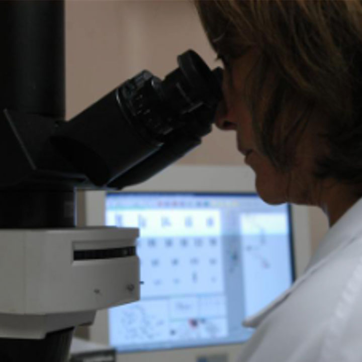
O Acesso Aberto à literatura científica é essencial para retroalimentar o ciclo de produção do conhecimento. Quando acontece uma emergência em saúde pública, a circulação rápida de conhecimentos e das últimas descobertas são essenciais na corrida para frear a propagação de doenças, identificar métodos de prevenção e possíveis tratamentos.
Em 2015, a circulação do vírus Zika se tornou um caso emblemático para a ciência brasileira, pois a capacidade de dar respostas a um evento atípico (o aumento expressivo de nascimentos de bebês com microcefalia no Nordeste) foi potencializada pelo Acesso Aberto. Nesse momento, criou-se uma intensa rede de troca de conhecimentos entre diversas instituições, incluindo a Fiocruz, e profissionais de diversas áreas como médicos, pesquisadores, técnicos, governo, pacientes e a sociedade.
Em 2020, o Acesso Aberto foi novamente uma prática importantíssima em emergências sanitárias, agora em nível global, com a pandemia do vírus SARS-CoV-2.
Como citar esta aula:
MARANHÃO, A. M. N. et al. Acesso Aberto na Fiocruz. In: JORGE, V.; CLINIO, A. (coord.). Programa de Formação Modular em Ciência Aberta. Módulo 2. Acesso Aberto. Rio de Janeiro: Fiocruz, 2025. Aula 6 (2ª edição). Disponível em: https://mooc.campusvirtual.fiocruz.br/rea/ciencia-aberta-2ed/modulo3/aula6.html. Acesso em: 14 mar. 2025.